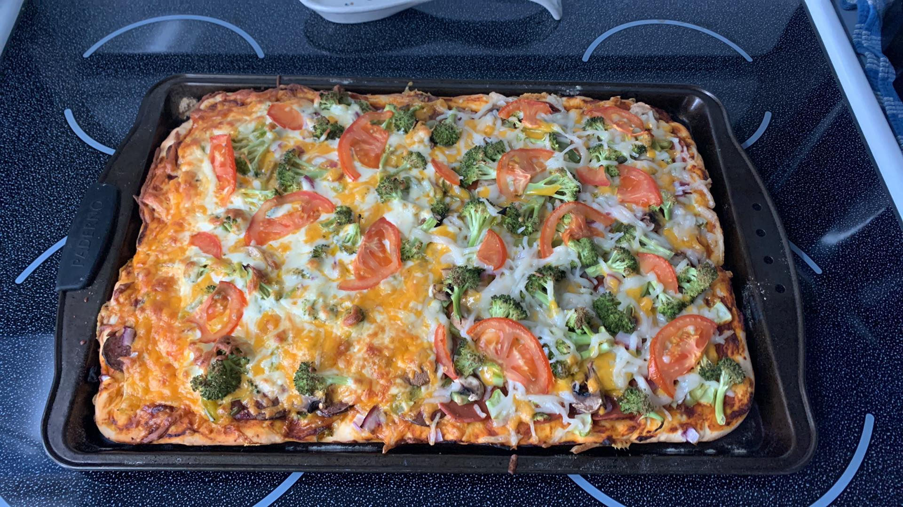

Pizza Dough Recipe

Description
Easy to make and great tasting this recipe is a favorite go-to for homemade pizza!
Ingredients
- 1 pkg. dry yeast
- 1 cup warm water
- 1 tsp sugar
- 1 tsp salt
- 2 tbsp vegetable oil
- 2 1/2 cups flour
Steps
- Preheat over to 425F
- In medium bowl, combine yeast and water
- Cover 5 minutes
- Add remaining ingredients
- Mix with large spoon, folding dough together (beat 20 times)
- Cover and let rest 5 minutes
- With oiled hands spread dough on pizza pan
- Top as desired
- Bake for 20-25 minutes until cheese melted and edges slightly brown
- Let cool 2 minutes, cut, eat, and enjoy!